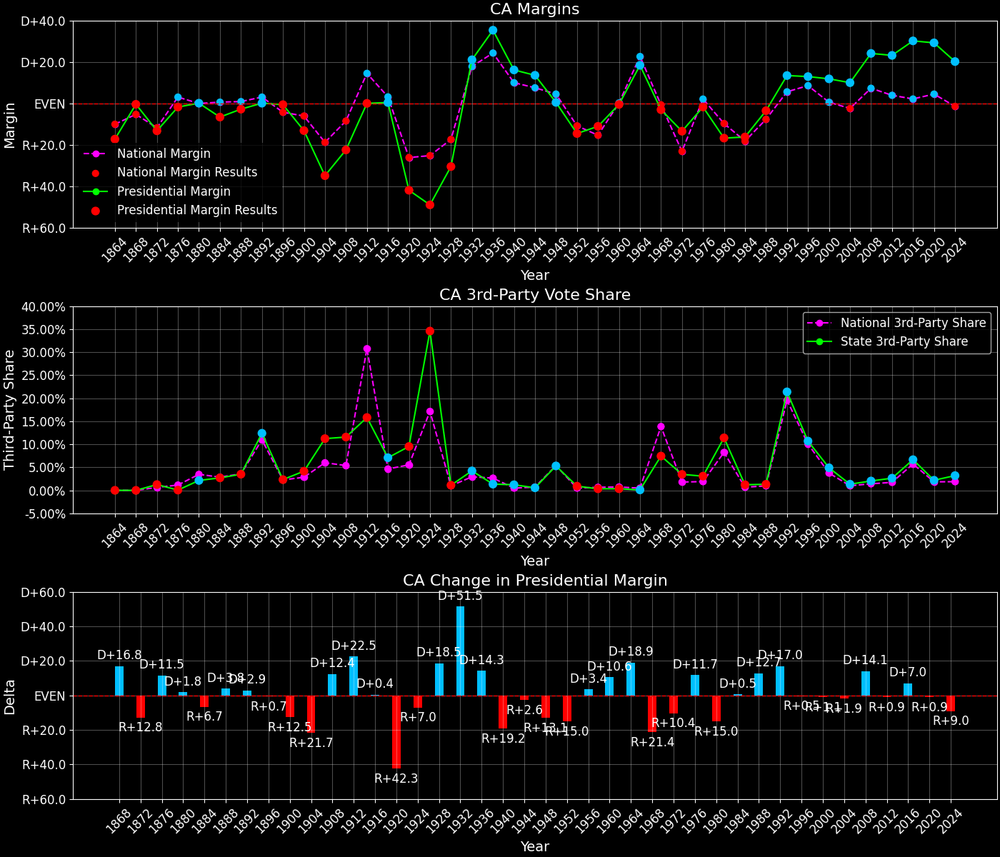
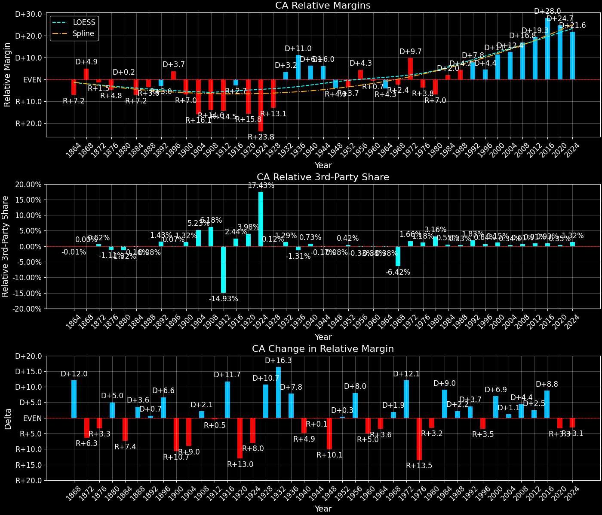
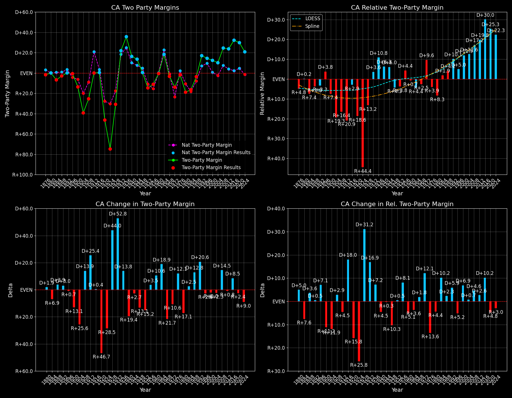

| Year | D | R | State Margin | Nat. Margin | Rel. Margin | Total votes | EVs |
|---|---|---|---|---|---|---|---|
| 1864 | 43,838(41.4%) | 62,140(58.6%) | R+17.3 | R+10.1 | R+7.2 | 105,986 | 5 |
| 1868 | 54,078(49.8%)(Δ 10,240) | 54,592(50.2%)(Δ -7,548) | R+0.5(Δ D+16.8) | R+5.3(Δ D+4.8) | D+4.9(Δ D+12.0) | 108,670(Δ 2,684) | 5 |
| 1872 | 39,060(42.8%)(Δ -15,018) | 51,181(56.1%)(Δ -3,411) | R+13.3(Δ R+12.8) | R+11.8(Δ R+6.5) | R+1.5(Δ R+6.3) | 91,387(Δ -17,283) | 6 |
| 1876 | 75,845(49.1%)(Δ 36,785) | 78,614(50.9%)(Δ 27,433) | R+1.8(Δ D+11.5) | D+3.0(Δ D+14.8) | R+4.8(Δ R+3.3) | 154,544(Δ 63,157) | 6 |
| 1880 | 80,442(49.0%)(Δ 4,597) | 80,348(48.9%)(Δ 1,734) | D+0.1(Δ D+1.8) | R+0.1(Δ R+3.1) | D+0.2(Δ D+5.0) | 164,321(Δ 9,777) | 6 |
| 1884 | 89,288(45.9%)(Δ 8,846) | 102,369(52.6%)(Δ 22,021) | R+6.6(Δ R+6.7) | D+0.6(Δ D+0.7) | R+7.2(Δ R+7.4) | 196,988(Δ 32,667) | 8 |
| 1888 | 117,729(47.4%)(Δ 28,441) | 124,816(50.3%)(Δ 22,447) | R+2.8(Δ D+3.8) | D+0.8(Δ D+0.3) | R+3.6(Δ D+3.6) | 251,339(Δ 54,351) | 8 |
| 1892 | 118,174(45.2%)(Δ 445) | 118,027(45.1%)(Δ -6,789) | D+0.1(Δ D+2.9) | D+3.0(Δ D+2.2) | R+3.0(Δ D+0.7) | 269,609(Δ 18,270) | 9 |
| 1896 | 144,766(49.2%)(Δ 26,592) | 146,688(49.9%)(Δ 28,661) | R+0.6(Δ R+0.7) | R+4.3(Δ R+7.3) | D+3.7(Δ D+6.6) | 298,419(Δ 28,810) | 9 |
| 1900 | 124,985(42.0%)(Δ -19,781) | 164,755(55.4%)(Δ 18,067) | R+13.2(Δ R+12.5) | R+6.1(Δ R+1.8) | R+7.0(Δ R+10.7) | 302,318(Δ 3,899) | 9 |
| 1904 | 89,404(27.6%)(Δ -35,581) | 205,226(63.3%)(Δ 40,471) | R+34.9(Δ R+21.7) | R+18.8(Δ R+12.7) | R+16.1(Δ R+9.0) | 331,878(Δ 29,560) | 10 |
| 1908 | 127,492(34.4%)(Δ 38,088) | 214,398(57.9%)(Δ 9,172) | R+22.5(Δ D+12.4) | R+8.5(Δ D+10.3) | R+14.0(Δ D+2.1) | 386,597(Δ 54,719) | 10 |
| 1912 | 283,436(43.9%)(Δ 155,944) | 283,610(43.9%)(Δ 69,212) | R+0.0(Δ D+22.5) | D+14.4(Δ D+23.0) | R+14.5(Δ R+0.5) | 673,527(Δ 286,930) | 13 |
| 1916 | 466,289(48.0%)(Δ 182,853) | 462,516(47.6%)(Δ 178,906) | D+0.4(Δ D+0.4) | D+3.1(Δ R+11.3) | R+2.7(Δ D+11.7) | 999,603(Δ 326,076) | 13 |
| 1920 | 229,191(25.0%)(Δ -237,098) | 624,992(68.1%)(Δ 162,476) | R+41.9(Δ R+42.3) | R+26.2(Δ R+29.3) | R+15.8(Δ R+13.0) | 944,050(Δ -55,553) | 13 |
| 1924 | 105,514(8.4%)(Δ -123,677) | 733,250(58.0%)(Δ 108,258) | R+49.0(Δ R+7.0) | R+25.2(Δ D+1.0) | R+23.8(Δ R+8.0) | 1,281,900(Δ 337,850) | 13 |
| 1928 | 614,365(34.2%)(Δ 508,851) | 1,162,323(64.7%)(Δ 429,073) | R+30.5(Δ D+18.5) | R+17.4(Δ D+7.8) | R+13.1(Δ D+10.7) | 1,796,656(Δ 514,756) | 13 |
| 1932 | 1,324,157(59.2%)(Δ 709,792) | 847,902(37.9%)(Δ -314,421) | D+21.0(Δ D+51.5) | D+17.8(Δ D+35.2) | D+3.2(Δ D+16.3) | 2,267,966(Δ 471,310) | 22 |
| 1936 | 1,766,836(67.6%)(Δ 442,679) | 836,431(32.0%)(Δ -11,471) | D+35.3(Δ D+14.3) | D+24.3(Δ D+6.5) | D+11.0(Δ D+7.8) | 2,638,882(Δ 370,916) | 22 |
| 1940 | 1,877,618(57.9%)(Δ 110,782) | 1,351,419(41.6%)(Δ 514,988) | D+16.1(Δ R+19.2) | D+10.0(Δ R+14.3) | D+6.1(Δ R+4.9) | 3,268,791(Δ 629,909) | 22 |
| 1944 | 1,988,564(56.8%)(Δ 110,946) | 1,512,965(43.2%)(Δ 161,546) | D+13.5(Δ R+2.6) | D+7.5(Δ R+2.5) | D+6.0(Δ R+0.1) | 3,520,875(Δ 252,084) | 25 |
| 1948 | 1,913,134(47.8%)(Δ -75,430) | 1,895,269(47.4%)(Δ 382,304) | D+0.4(Δ R+13.1) | D+4.5(Δ R+3.0) | R+4.0(Δ R+10.1) | 4,021,538(Δ 500,663) | 25 |
| 1952 | 2,257,646(42.5%)(Δ 344,512) | 3,035,587(57.1%)(Δ 1,140,318) | R+14.6(Δ R+15.0) | R+10.9(Δ R+15.3) | R+3.7(Δ D+0.3) | 5,341,603(Δ 1,320,065) | 32 |
| 1956 | 2,420,135(44.4%)(Δ 162,489) | 3,027,668(55.5%)(Δ -7,919) | R+11.1(Δ D+3.4) | R+15.4(Δ R+4.5) | D+4.3(Δ D+8.0) | 5,466,355(Δ 124,752) | 32 |
| 1960 | 3,224,099(49.7%)(Δ 803,964) | 3,259,722(50.3%)(Δ 232,054) | R+0.5(Δ D+10.6) | D+0.2(Δ D+15.6) | R+0.7(Δ R+5.0) | 6,506,578(Δ 1,040,223) | 32 |
| 1964 | 4,171,877(59.2%)(Δ 947,778) | 2,879,108(40.8%)(Δ -380,614) | D+18.3(Δ D+18.9) | D+22.6(Δ D+22.4) | R+4.3(Δ R+3.6) | 7,057,586(Δ 551,008) | 40 |
| 1968 | 3,244,318(45.1%)(Δ -927,559) | 3,467,664(48.2%)(Δ 588,556) | R+3.1(Δ R+21.4) | R+0.7(Δ R+23.3) | R+2.4(Δ D+1.9) | 7,251,587(Δ 194,001) | 40 |
| 1972 | 3,475,847(41.8%)(Δ 231,529) | 4,602,096(55.4%)(Δ 1,134,432) | R+13.5(Δ R+10.4) | R+23.1(Δ R+22.4) | D+9.7(Δ D+12.1) | 8,367,862(Δ 1,116,275) | 45 |
| 1976 | 3,742,284(48.7%)(Δ 266,437) | 3,882,244(50.5%)(Δ -719,852) | R+1.8(Δ D+11.7) | D+2.1(Δ D+25.2) | R+3.8(Δ R+13.5) | 7,867,117(Δ -500,745) | 45 |
| 1980 | 3,083,661(36.9%)(Δ -658,623) | 4,524,858(54.2%)(Δ 642,614) | R+16.8(Δ R+15.0) | R+9.7(Δ R+11.8) | R+7.0(Δ R+3.2) | 8,587,063(Δ 719,946) | 45 |
| 1984 | 3,922,519(41.6%)(Δ 838,858) | 5,467,009(57.9%)(Δ 942,151) | R+16.2(Δ D+0.5) | R+18.2(Δ R+8.5) | D+2.0(Δ D+9.0) | 9,505,423(Δ 918,360) | 47 |
| 1988 | 4,702,233(47.8%)(Δ 779,714) | 5,054,917(51.4%)(Δ -412,092) | R+3.6(Δ D+12.7) | R+7.7(Δ D+10.5) | D+4.2(Δ D+2.2) | 9,887,064(Δ 381,641) | 47 |
| 1992 | 5,121,325(46.4%)(Δ 419,092) | 3,630,574(32.9%)(Δ -1,424,343) | D+13.4(Δ D+17.0) | D+5.6(Δ D+13.3) | D+7.8(Δ D+3.7) | 11,131,721(Δ 1,244,657) | 54 |
| 1996 | 5,119,835(53.1%)(Δ -1,490) | 3,828,380(39.7%)(Δ 197,806) | D+12.9(Δ R+0.5) | D+8.5(Δ D+3.0) | D+4.4(Δ R+3.5) | 10,019,484(Δ -1,112,237) | 54 |
| 2000 | 5,861,203(54.0%)(Δ 741,368) | 4,567,429(42.1%)(Δ 739,049) | D+11.8(Δ R+1.1) | D+0.5(Δ R+8.0) | D+11.3(Δ D+6.9) | 10,965,856(Δ 946,372) | 54 |
| 2004 | 6,745,485(54.8%)(Δ 884,282) | 5,509,826(44.8%)(Δ 942,397) | D+9.9(Δ R+1.9) | R+2.5(Δ R+3.0) | D+12.4(Δ D+1.1) | 12,421,852(Δ 1,455,996) | 55 |
| 2008 | 8,274,473(61.8%)(Δ 1,528,988) | 5,011,781(37.4%)(Δ -498,045) | D+24.1(Δ D+14.1) | D+7.3(Δ D+9.7) | D+16.8(Δ D+4.4) | 13,561,900(Δ 1,140,048) | 55 |
| 2012 | 7,854,285(61.2%)(Δ -420,188) | 4,839,958(37.7%)(Δ -171,823) | D+23.1(Δ R+0.9) | D+3.9(Δ R+3.4) | D+19.3(Δ D+2.5) | 13,038,547(Δ -523,353) | 55 |
| 2016 | 8,753,788(63.8%)(Δ 899,503) | 4,483,810(32.7%)(Δ -356,148) | D+30.1(Δ D+7.0) | D+2.1(Δ R+1.8) | D+28.0(Δ D+8.8) | 14,181,595(Δ 1,143,048) | 55 |
| 2020 | 11,110,639(64.2%)(Δ 2,356,851) | 6,006,518(34.7%)(Δ 1,522,708) | D+29.2(Δ R+0.9) | D+4.5(Δ D+2.4) | D+24.7(Δ R+3.3) | 17,501,380(Δ 3,319,785) | 55 |
| 2024 | 9,276,179(59.6%)(Δ -1,834,460) | 6,081,697(39.1%)(Δ 75,179) | D+20.1(Δ R+9.0) | R+1.5(Δ R+5.9) | D+21.6(Δ R+3.1) | 15,865,475(Δ -1,635,905) | 54 |
| Year | D | R | Other votes | State 3rd-Party Share | 3rd-Party Nat. Share | 3rd-Party Rel. Share |
|---|---|---|---|---|---|---|
| 1864 | 43,838(41.4%) | 62,140(58.6%) | 0(0.0%) | 0.01% | 0.02% | -0.01% |
| 1868 | 54,078(49.8%)(Δ 10,240) | 54,592(50.2%)(Δ -7,548) | 0(0.0%) | 0.00% | 0.00% | 0.00% |
| 1872 | 39,060(42.8%)(Δ -15,018) | 51,181(56.1%)(Δ -3,411) | 920(1.0%) | 1.25% | 0.63% | 0.62% |
| 1876 | 75,845(49.1%)(Δ 36,785) | 78,614(50.9%)(Δ 27,433) | 47(0.0%) | 0.06% | 1.16% | -1.11% |
| 1880 | 80,442(49.0%)(Δ 4,597) | 80,348(48.9%)(Δ 1,734) | 3,394(2.1%) | 2.15% | 3.47% | -1.32% |
| 1884 | 89,288(45.9%)(Δ 8,846) | 102,369(52.6%)(Δ 22,021) | 2,965(1.5%) | 2.71% | 2.87% | -0.16% |
| 1888 | 117,729(47.4%)(Δ 28,441) | 124,816(50.3%)(Δ 22,447) | 5,761(2.3%) | 3.50% | 3.57% | -0.08% |
| 1892 | 118,174(45.2%)(Δ 445) | 118,027(45.1%)(Δ -6,789) | 25,311(9.7%) | 12.39% | 10.97% | 1.43% |
| 1896 | 144,766(49.2%)(Δ 26,592) | 146,688(49.9%)(Δ 28,661) | 2,573(0.9%) | 2.33% | 2.27% | 0.07% |
| 1900 | 124,985(42.0%)(Δ -19,781) | 164,755(55.4%)(Δ 18,067) | 7,554(2.5%) | 4.16% | 2.84% | 1.32% |
| 1904 | 89,404(27.6%)(Δ -35,581) | 205,226(63.3%)(Δ 40,471) | 29,535(9.1%) | 11.22% | 5.99% | 5.23% |
| 1908 | 127,492(34.4%)(Δ 38,088) | 214,398(57.9%)(Δ 9,172) | 28,659(7.7%) | 11.56% | 5.39% | 6.18% |
| 1912 | 283,436(43.9%)(Δ 155,944) | 283,610(43.9%)(Δ 69,212) | 79,201(12.3%) | 15.81% | 30.74% | -14.93% |
| 1916 | 466,289(48.0%)(Δ 182,853) | 462,516(47.6%)(Δ 178,906) | 42,898(4.4%) | 7.08% | 4.64% | 2.44% |
| 1920 | 229,191(25.0%)(Δ -237,098) | 624,992(68.1%)(Δ 162,476) | 64,076(7.0%) | 9.52% | 5.53% | 3.98% |
| 1924 | 105,514(8.4%)(Δ -123,677) | 733,250(58.0%)(Δ 108,258) | 424,649(33.6%) | 34.57% | 17.14% | 17.43% |
| 1928 | 614,365(34.2%)(Δ 508,851) | 1,162,323(64.7%)(Δ 429,073) | 19,595(1.1%) | 1.11% | 0.99% | 0.12% |
| 1932 | 1,324,157(59.2%)(Δ 709,792) | 847,902(37.9%)(Δ -314,421) | 63,299(2.8%) | 4.23% | 2.94% | 1.29% |
| 1936 | 1,766,836(67.6%)(Δ 442,679) | 836,431(32.0%)(Δ -11,471) | 11,331(0.4%) | 1.35% | 2.66% | -1.31% |
| 1940 | 1,877,618(57.9%)(Δ 110,782) | 1,351,419(41.6%)(Δ 514,988) | 16,506(0.5%) | 1.22% | 0.48% | 0.73% |
| 1944 | 1,988,564(56.8%)(Δ 110,946) | 1,512,965(43.2%)(Δ 161,546) | 2,515(0.1%) | 0.55% | 0.72% | -0.17% |
| 1948 | 1,913,134(47.8%)(Δ -75,430) | 1,895,269(47.4%)(Δ 382,304) | 190,381(4.8%) | 5.30% | 5.38% | -0.08% |
| 1952 | 2,257,646(42.5%)(Δ 344,512) | 3,035,587(57.1%)(Δ 1,140,318) | 24,692(0.5%) | 0.91% | 0.49% | 0.42% |
| 1956 | 2,420,135(44.4%)(Δ 162,489) | 3,027,668(55.5%)(Δ -7,919) | 6,087(0.1%) | 0.34% | 0.67% | -0.33% |
| 1960 | 3,224,099(49.7%)(Δ 803,964) | 3,259,722(50.3%)(Δ 232,054) | 1,051(0.0%) | 0.35% | 0.73% | -0.38% |
| 1964 | 4,171,877(59.2%)(Δ 947,778) | 2,879,108(40.8%)(Δ -380,614) | 0(0.0%) | 0.09% | 0.48% | -0.38% |
| 1968 | 3,244,318(45.1%)(Δ -927,559) | 3,467,664(48.2%)(Δ 588,556) | 487,270(6.8%) | 7.44% | 13.86% | -6.42% |
| 1972 | 3,475,847(41.8%)(Δ 231,529) | 4,602,096(55.4%)(Δ 1,134,432) | 232,554(2.8%) | 3.46% | 1.80% | 1.66% |
| 1976 | 3,742,284(48.7%)(Δ 266,437) | 3,882,244(50.5%)(Δ -719,852) | 58,412(0.8%) | 3.08% | 1.90% | 1.18% |
| 1980 | 3,083,661(36.9%)(Δ -658,623) | 4,524,858(54.2%)(Δ 642,614) | 739,833(8.9%) | 11.40% | 8.24% | 3.16% |
| 1984 | 3,922,519(41.6%)(Δ 838,858) | 5,467,009(57.9%)(Δ 942,151) | 49,951(0.5%) | 1.22% | 0.67% | 0.55% |
| 1988 | 4,702,233(47.8%)(Δ 779,714) | 5,054,917(51.4%)(Δ -412,092) | 70,105(0.7%) | 1.31% | 0.98% | 0.33% |
| 1992 | 5,121,325(46.4%)(Δ 419,092) | 3,630,574(32.9%)(Δ -1,424,343) | 2,296,006(20.8%) | 21.38% | 19.55% | 1.83% |
| 1996 | 5,119,835(53.1%)(Δ -1,490) | 3,828,380(39.7%)(Δ 197,806) | 697,847(7.2%) | 10.69% | 10.05% | 0.64% |
| 2000 | 5,861,203(54.0%)(Δ 741,368) | 4,567,429(42.1%)(Δ 739,049) | 418,707(3.9%) | 4.90% | 3.75% | 1.15% |
| 2004 | 6,745,485(54.8%)(Δ 884,282) | 5,509,826(44.8%)(Δ 942,397) | 50,165(0.4%) | 1.34% | 1.00% | 0.34% |
| 2008 | 8,274,473(61.8%)(Δ 1,528,988) | 5,011,781(37.4%)(Δ -498,045) | 108,381(0.8%) | 2.03% | 1.42% | 0.61% |
| 2012 | 7,854,285(61.2%)(Δ -420,188) | 4,839,958(37.7%)(Δ -171,823) | 143,221(1.1%) | 2.64% | 1.73% | 0.91% |
| 2016 | 8,753,788(63.8%)(Δ 899,503) | 4,483,810(32.7%)(Δ -356,148) | 478,500(3.5%) | 6.66% | 5.73% | 0.93% |
| 2020 | 11,110,639(64.2%)(Δ 2,356,851) | 6,006,518(34.7%)(Δ 1,522,708) | 187,910(1.1%) | 2.20% | 1.84% | 0.35% |
| 2024 | 9,276,179(59.6%)(Δ -1,834,460) | 6,081,697(39.1%)(Δ 75,179) | 197,645(1.3%) | 3.20% | 1.88% | 1.32% |

| Year | D | R | 2-Party Margin | 2-Party Nat. Margin | 2-Party Rel. Margin | EVs |
|---|---|---|---|---|---|---|
| 1864 | 43,838(41.4%) | 62,140(58.6%) | R+17.3 | R+10.1 | R+7.2 | 5 |
| 1868 | 54,078(49.8%)(Δ 10,240) | 54,592(50.2%)(Δ -7,548) | R+0.5(Δ D+16.8) | R+5.3(Δ D+4.8) | D+4.9(Δ D+12.0) | 5 |
| 1872 | 39,060(43.3%)(Δ -15,018) | 51,181(56.7%)(Δ -3,411) | R+13.4(Δ R+13.0) | R+11.9(Δ R+6.5) | R+1.6(Δ R+6.4) | 6 |
| 1876 | 75,845(49.1%)(Δ 36,785) | 78,614(50.9%)(Δ 27,433) | R+1.8(Δ D+11.6) | D+3.0(Δ D+14.9) | R+4.8(Δ R+3.3) | 6 |
| 1880 | 80,442(50.0%)(Δ 4,597) | 80,348(50.0%)(Δ 1,734) | D+0.1(Δ D+1.9) | R+0.1(Δ R+3.1) | D+0.2(Δ D+5.0) | 6 |
| 1884 | 89,288(46.6%)(Δ 8,846) | 102,369(53.4%)(Δ 22,021) | R+6.8(Δ R+6.9) | D+0.6(Δ D+0.7) | R+7.4(Δ R+7.6) | 8 |
| 1888 | 117,729(48.5%)(Δ 28,441) | 124,816(51.5%)(Δ 22,447) | R+2.9(Δ D+3.9) | D+0.9(Δ D+0.3) | R+3.8(Δ D+3.6) | 8 |
| 1892 | 118,174(50.0%)(Δ 445) | 118,027(50.0%)(Δ -6,789) | D+0.1(Δ D+3.0) | D+3.4(Δ D+2.5) | R+3.3(Δ D+0.5) | 9 |
| 1896 | 144,766(49.7%)(Δ 26,592) | 146,688(50.3%)(Δ 28,661) | R+0.7(Δ R+0.7) | R+4.4(Δ R+7.8) | D+3.8(Δ D+7.1) | 9 |
| 1900 | 124,985(43.1%)(Δ -19,781) | 164,755(56.9%)(Δ 18,067) | R+13.7(Δ R+13.1) | R+6.3(Δ R+1.9) | R+7.4(Δ R+11.2) | 9 |
| 1904 | 89,404(30.3%)(Δ -35,581) | 205,226(69.7%)(Δ 40,471) | R+39.3(Δ R+25.6) | R+20.0(Δ R+13.7) | R+19.3(Δ R+11.9) | 10 |
| 1908 | 127,492(37.3%)(Δ 38,088) | 214,398(62.7%)(Δ 9,172) | R+25.4(Δ D+13.9) | R+9.0(Δ D+11.0) | R+16.4(Δ D+2.9) | 10 |
| 1912 | 283,436(50.0%)(Δ 155,944) | 283,610(50.0%)(Δ 69,212) | R+0.0(Δ D+25.4) | D+20.9(Δ D+29.9) | R+20.9(Δ R+4.5) | 13 |
| 1916 | 466,289(50.2%)(Δ 182,853) | 462,516(49.8%)(Δ 178,906) | D+0.4(Δ D+0.4) | D+3.3(Δ R+17.6) | R+2.9(Δ D+18.0) | 13 |
| 1920 | 229,191(26.8%)(Δ -237,098) | 624,992(73.2%)(Δ 162,476) | R+46.3(Δ R+46.7) | R+27.7(Δ R+31.0) | R+18.6(Δ R+15.8) | 13 |
| 1924 | 105,514(12.6%)(Δ -123,677) | 733,250(87.4%)(Δ 108,258) | R+74.8(Δ R+28.5) | R+30.4(Δ R+2.7) | R+44.4(Δ R+25.8) | 13 |
| 1928 | 614,365(34.6%)(Δ 508,851) | 1,162,323(65.4%)(Δ 429,073) | R+30.8(Δ D+44.0) | R+17.6(Δ D+12.8) | R+13.2(Δ D+31.2) | 13 |
| 1932 | 1,324,157(61.0%)(Δ 709,792) | 847,902(39.0%)(Δ -314,421) | D+21.9(Δ D+52.8) | D+18.3(Δ D+35.9) | D+3.6(Δ D+16.9) | 22 |
| 1936 | 1,766,836(67.9%)(Δ 442,679) | 836,431(32.1%)(Δ -11,471) | D+35.7(Δ D+13.8) | D+24.9(Δ D+6.6) | D+10.8(Δ D+7.2) | 22 |
| 1940 | 1,877,618(58.1%)(Δ 110,782) | 1,351,419(41.9%)(Δ 514,988) | D+16.3(Δ R+19.4) | D+10.0(Δ R+14.9) | D+6.3(Δ R+4.5) | 22 |
| 1944 | 1,988,564(56.8%)(Δ 110,946) | 1,512,965(43.2%)(Δ 161,546) | D+13.6(Δ R+2.7) | D+7.5(Δ R+2.5) | D+6.0(Δ R+0.3) | 25 |
| 1948 | 1,913,134(50.2%)(Δ -75,430) | 1,895,269(49.8%)(Δ 382,304) | D+0.5(Δ R+13.1) | D+4.7(Δ R+2.8) | R+4.3(Δ R+10.3) | 25 |
| 1952 | 2,257,646(42.7%)(Δ 344,512) | 3,035,587(57.3%)(Δ 1,140,318) | R+14.7(Δ R+15.2) | R+10.9(Δ R+15.6) | R+3.8(Δ D+0.5) | 32 |
| 1956 | 2,420,135(44.4%)(Δ 162,489) | 3,027,668(55.6%)(Δ -7,919) | R+11.2(Δ D+3.5) | R+15.5(Δ R+4.6) | D+4.4(Δ D+8.1) | 32 |
| 1960 | 3,224,099(49.7%)(Δ 803,964) | 3,259,722(50.3%)(Δ 232,054) | R+0.5(Δ D+10.6) | D+0.2(Δ D+15.7) | R+0.7(Δ R+5.1) | 32 |
| 1964 | 4,171,877(59.2%)(Δ 947,778) | 2,879,108(40.8%)(Δ -380,614) | D+18.3(Δ D+18.9) | D+22.7(Δ D+22.5) | R+4.4(Δ R+3.6) | 40 |
| 1968 | 3,244,318(48.3%)(Δ -927,559) | 3,467,664(51.7%)(Δ 588,556) | R+3.3(Δ R+21.7) | R+0.8(Δ R+23.5) | R+2.5(Δ D+1.8) | 40 |
| 1972 | 3,475,847(43.0%)(Δ 231,529) | 4,602,096(57.0%)(Δ 1,134,432) | R+13.9(Δ R+10.6) | R+23.6(Δ R+22.8) | D+9.6(Δ D+12.1) | 45 |
| 1976 | 3,742,284(49.1%)(Δ 266,437) | 3,882,244(50.9%)(Δ -719,852) | R+1.8(Δ D+12.1) | D+2.1(Δ D+25.7) | R+3.9(Δ R+13.6) | 45 |
| 1980 | 3,083,661(40.5%)(Δ -658,623) | 4,524,858(59.5%)(Δ 642,614) | R+18.9(Δ R+17.1) | R+10.6(Δ R+12.7) | R+8.3(Δ R+4.4) | 45 |
| 1984 | 3,922,519(41.8%)(Δ 838,858) | 5,467,009(58.2%)(Δ 942,151) | R+16.4(Δ D+2.5) | R+18.3(Δ R+7.7) | D+1.9(Δ D+10.2) | 47 |
| 1988 | 4,702,233(48.2%)(Δ 779,714) | 5,054,917(51.8%)(Δ -412,092) | R+3.6(Δ D+12.8) | R+7.8(Δ D+10.5) | D+4.2(Δ D+2.3) | 47 |
| 1992 | 5,121,325(58.5%)(Δ 419,092) | 3,630,574(41.5%)(Δ -1,424,343) | D+17.0(Δ D+20.6) | D+6.9(Δ D+14.7) | D+10.1(Δ D+5.9) | 54 |
| 1996 | 5,119,835(57.2%)(Δ -1,490) | 3,828,380(42.8%)(Δ 197,806) | D+14.4(Δ R+2.6) | D+9.5(Δ D+2.6) | D+5.0(Δ R+5.2) | 54 |
| 2000 | 5,861,203(56.2%)(Δ 741,368) | 4,567,429(43.8%)(Δ 739,049) | D+12.4(Δ R+2.0) | D+0.5(Δ R+8.9) | D+11.9(Δ D+6.9) | 54 |
| 2004 | 6,745,485(55.0%)(Δ 884,282) | 5,509,826(45.0%)(Δ 942,397) | D+10.1(Δ R+2.3) | R+2.5(Δ R+3.0) | D+12.6(Δ D+0.7) | 55 |
| 2008 | 8,274,473(62.3%)(Δ 1,528,988) | 5,011,781(37.7%)(Δ -498,045) | D+24.6(Δ D+14.5) | D+7.4(Δ D+9.9) | D+17.2(Δ D+4.6) | 55 |
| 2012 | 7,854,285(61.9%)(Δ -420,188) | 4,839,958(38.1%)(Δ -171,823) | D+23.7(Δ R+0.8) | D+3.9(Δ R+3.4) | D+19.8(Δ D+2.6) | 55 |
| 2016 | 8,753,788(66.1%)(Δ 899,503) | 4,483,810(33.9%)(Δ -356,148) | D+32.3(Δ D+8.5) | D+2.2(Δ R+1.7) | D+30.0(Δ D+10.2) | 55 |
| 2020 | 11,110,639(64.9%)(Δ 2,356,851) | 6,006,518(35.1%)(Δ 1,522,708) | D+29.8(Δ R+2.4) | D+4.5(Δ D+2.3) | D+25.3(Δ R+4.8) | 55 |
| 2024 | 9,276,179(60.4%)(Δ -1,834,460) | 6,081,697(39.6%)(Δ 75,179) | D+20.8(Δ R+9.0) | R+1.5(Δ R+6.0) | D+22.3(Δ R+3.0) | 54 |